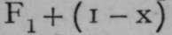
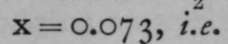

Vapour Densities Of Elements
Description
This section is from the book "Modern Chemistry", by William Ramsay. Also available from Amazon: Modern Chemistry: Theoretical and Modern Chemistry (Volume 2).
Vapour Densities Of Elements
For reasons already explained on page 13, a molecule of oxygen is believed to contain two atoms, and inasmuch as the equivalents of most elements have been determined with reference to oxygen, by analysis or by synthesis of their oxides or of their chlorides, and as the ratio of the equivalent of chlorine to that of oxygen has been very accurately determined, it has been agreed to refer the atomic weights of the elements to the standard of oxygen instead of to that of hydrogen. But the atomic weight of oxygen is assumed as 16, and the same standard is applied to the densities of gases; instead of referring them to the standard of H = 1, they are referred to O = 16. To find the molecular weights, the number expressing the density must be doubled in order to compare with the molecular weight of oxygen, which is 32.
Hydrogen
The density referred to this standard is i.oo6 or 1.007. There is not yet an absolute certainty, but it is clear that the molecular weight of hydrogen must be approximately 2, i.e. the molecule is di-atomic.
Nitrogen
Lord Rayleigh found the density of nitrogen to be 14.001 ; its molecular weight is therefore 28, and its formula N2.
Oxygen
Taken as 16; formula O2. As these gases keep their relative densities up to a temperature of 17000, it is to be presumed that they all remain diatomic, for it is much more likely that no one of them dissociates than that all dissociate to an equal extent on rise of temperature. The case is different with fluorine, chlorine, bromine, and iodine. The density of fluorine at atmospheric temperature is 18.3; the theoretical density for F2 is 19. It follows, therefore, that fluorine must consist of a mixture of monatomic and diatomic molecules. Now, 19 is the molecular weight of F1, for the atom and the molecule are identical, and 38 that of F2 ; and the gas must contain x molecules of  molecules of F0. Hence, 19x 4- 38( 1 - x) = 18.3 x 2 ; and in every 1000 molecules of the gas there are 73 molecules of F1 and 927 molecules of F2.
Chlorine
Chlorine at 200° was found to have the density 35.45, the same as its atomic weight, but at iooo° the density was 27.06, and at 15600 23.3. At low temperatures, therefore, the formula of chlorine is Cl2, but at 15600 the gas consists of 61 per cent, of molecules of CIr Similar results have been found for bromine, and for iodine, which also has the formula I2 at low temperatures, the density was found to be 63.7, corresponding to the molecular weight 127.4 at 1500° under low pressure; for reducing the pressure also increases dissociation. As the atomic weight of iodine is 126.85,tne £asatlS°°° consists almost entirely of molecules of L.
Thallium
Thallium has been weighed as gas at 1730°; the density was 206.2, a sufficient approximation to 204.1 to warrant the conclusion that its molecule is diatomic.
Bismuth
Bismuth at 1640° gave the density 146.5, showing, as its atomic weight is 208.5, a partial dissociation from Bi0 to Bir
Phosphorus And Arsenic
Phosphorus and arsenic give densities which indicate the presence in their gases of more complicated molecules. At 3 13° the density of phosphorus gas is 64, and there is a gradual decrease with rise of temperature, until at 17080 the density is 45.6. As the atomic weight of phosphorus is 31.0, the density 62 would correspond to the existence of molecules of P4, while at 1708° there must be a considerable admixture of molecules of a smaller complexity, probably P2. Arsenic gas had the density 154.2 at 644°, and 79.5 at 1700°; the atomic weight of arsenic being 75, the density 150 would correspond to the formula As4, and at 1700° the molecules are almost all As2, only a small admixture of molecules of As4 remaining undecomposed. The density of antimony gas, 141.5 at 16400, implies the presence of some molecules of Sb4 among many molecules of Sb2, for the atomic weight is 120.
The elements sulphur, selenium, and tellurium show signs of even greater molecular complexity. Dumas found the density of sulphur gas at 500° to be 94.8 ; now, the atomic weight of sulphur is 32.08, and 96 is 32 x 3 ; hence, it was for long supposed that a molecule of gaseous sulphur consisted of 6 atoms; but it has been recently found that at 193°, of course under a very small pressure, 2.1 mms. (for the boiling-point of sulphur at normal pressure is 446°), the density reached the high number 125.5 5 now> 32 x 4 is 128, and it must be concluded that the molecular weight of sulphur in the gaseous state is 256, and its formula at low temperatures Sg. At 8oo° its formula is S2, and at 17190 the density 31.8 was found, showing no sign of further molecular simplification. Selenium, of which the atomic weight is 79.1, has the density 111 at 86o°, implying some molecular complexity, and at 1420° the density is reduced to 82.2, corresponding to the formula Se>2; and tellurium, at about 1400°, has the gaseous density 130; it appears, therefore, to consist of molecules of Te2, since its atomic weight is 127.6.
These examples show that the molecules of many elements in the gaseous state are more or less complex. It is probable that sulphur, selenium, and tellurium would exist as octo-atomic molecules could the temperature be sufficiently reduced ; even with sulphur at its boiling-point under normal pressure, the temperature is so high that many of these complex molecules are already decomposed. Probability is also in favour of the supposition that elements of the phosphorus group, phosphorus, arsenic, antimony, and possibly bismuth, have molecules consisting of 4 atoms ; these too dissociating with rise of temperature into di-atomic molecules. Oxygen, nitrogen, and hydrogen consist of di-atomic molecules, no sign of dissociation having been remarked even at the highest attainable temperatures; but fluorine, though consisting mostly of di-atomic molecules, contains some mono-atomic ones ; and chlorine, bromine, and iodine, though probably Cl2, Br2, and I2 at low temperatures, dissociate into molecules identical with their atoms if the temperature is sufficiently raised. The fact of reduction in the molecular complexity of the molecules of elements prepares us for the existence of elements which in the gaseous state are already mono-atomic ; and many such are known.
Mono-atomic | Cad- | ||||
elements. | Sodium. | Potassium. | Zinc. | mium. | Mercury. |
Gas-density | 12.7 | 18.8 | 34-iS 1400° | 57-01 | 100.94 |
Temperature | Red heat | Red heat | 10400 | 4460 and 17300 | |
Atomic weights | 23.05 | 39-14 | 65.4 | 112.0 | 200.3 |
Density x 2 | 25-4 | 37-6 | 68.3 | 114.02 | 201.88 |
I he presumption from these numbers is that the elements are all mono-atomic. It must be remembered that their specific heats all point to the atomic weights given.
There is, however, another argument for the mono-atomicity of gaseous mercury. On the assumption of the " kinetic theory of gases," that the pressure of a gas on the walls of the vessel containing it is due to the bombardment of the sides by repeated and enormously numerous impacts of the molecules, it can be calculated that the amount of heat necessary to raise the temperature of the molecular weight expressed in grams of an ideal gas the molecules of which are supposed to be hard smooth elastic spheres, must be 3 calories, provided the gas be not allowed to expand. If, however, it be allowed to expand, it will cool itself, and more heat must be added to restore the temperature; this extra amount of heat is two additional calories. To heat the molecular weight of the gas in grams through i°, allowing it to expand at constant pressure, requires therefore 5 calories. The "molecular heat at constant volume" is thus 3 calories; the "molecular heat at constant pressure " is 5 calories. The ratio between the two is 3 : 5, or 1 : 1.66. This has been found to be the case for mercury gas, the mono-atomicity of whose molecule is proved on other grounds; and the inactive gases of the atmosphere, helium, neon, argon, krypton, and xenon, exhibit the same ratio between their atomic heats. It therefore follows that the atoms of these gases are also identical with their molecules ; and that their atomic weights are to be deduced from their densities by doubling the numbers representing the latter. Confirmatory of this view, the ratio between the molecular heats of oxygen, hydrogen, nitrogen, and gases which are known to be di-atomic, like NO, CO, etc, is as 5 : 7 or 1 : 1.4. Such gases require more heat to raise their temperature than an equal number of molecules of the mono-atomic gases do ; the reason is, that the heat applied to di- or poly-atomic gases is used, not merely in transporting the atoms from place to place and raising pressure by causing them to bombard the walls of the containing vessel, but some heat is required to cause the atoms to move within the molecule, in some rotatory or vibratory manner ; and consistently with this it has been found that gases consisting of a greater number of atoms in the molecule require still more heat to raise the temperature of weights proportional to their molecular weights ; in other words, their molecular heats at constant volume are higher the greater the number of atoms in the molecule.
For these reasons the densities of the inactive gases must be multiplied by 2 to obtain their atomic weights. The data are :—
Helium. | Neon. | Argon. | Krypton. | Xenon. | |
Densities | 2 | IO | 20 | 4i | 64 |
Atomic and | |||||
molecular weights | 4 | 20 | 4O | 82 | 128 |
Continue to:
- prev: Methods Of Determining The Equivalents Of Elements
- Table of Contents
- next: Lowering Of Freezing-Point, Or Lowering Of Vapour Pressure Of Solvent